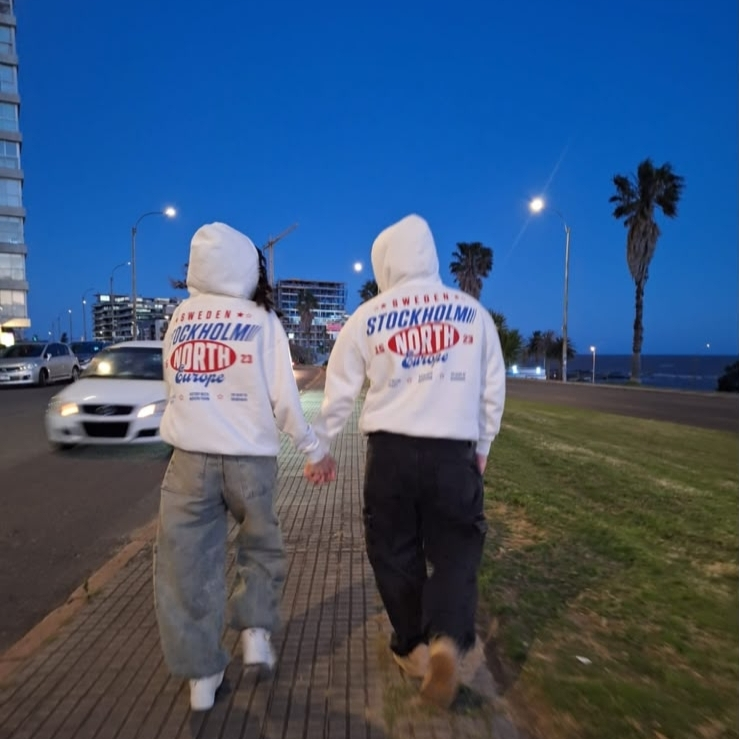
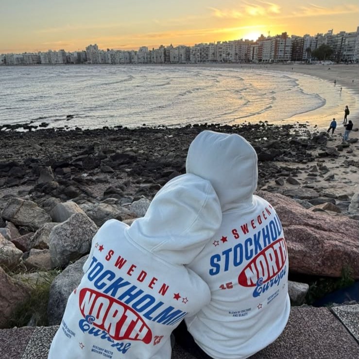
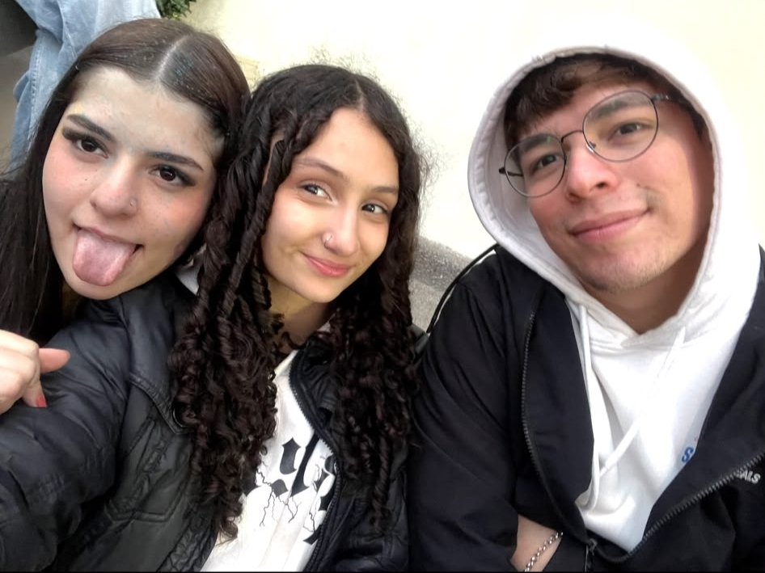
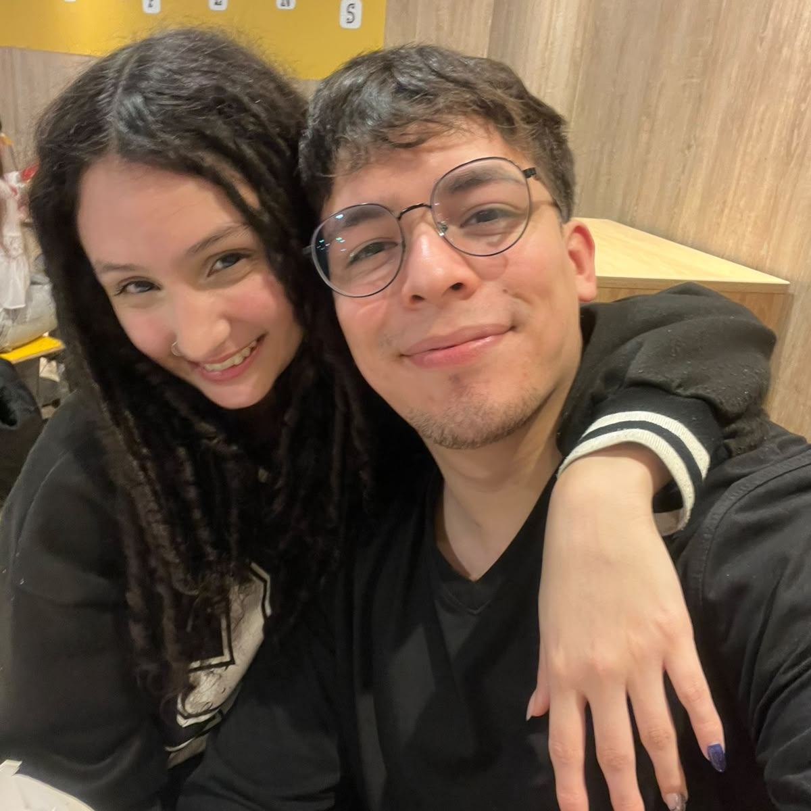
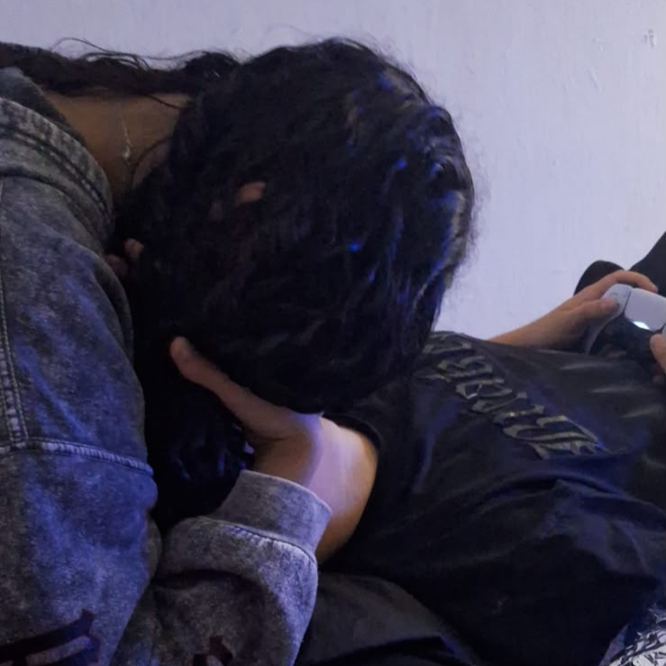

PARA EL AMOR DE MI VIDA
12 · 10 · 2026
NUESTRO PRIMER ANIVERSARIO
NUESTRA BANDA SONORA
AHORA SONANDO
Axel
PLAYLIST
Y PENSAR QUE TODO COMENZÓ AQUEL DÍA...
Desde aquel 12 de octubre de 2025, cada segundo se convirtió en parte de nuestra historia.
Y todavía nos quedan infinitos segundos por vivir. ❤️
01
Esta historia no comenzó un 12 de octubre. Comenzó mucho antes. Comenzó desde el primer momento en que te miré a los ojos, desde aquellas primeras palabras, cuando empecé a sentir algo que no sabía explicar. Algo que, con el tiempo, se convertiría en todo lo que hoy siento por vos. Pensar que en un mundo con más de 8 mil millones de personas, entre tantos lugares, tantos caminos y tantas casualidades, tuvimos la suerte de encontrarnos. Fue como encontrar agua en medio del desierto. Y quizás lo más lindo es que, antes de saber que íbamos a terminar juntos, ya había algo que me hacía querer tenerte siempre cerca. Pasamos por un montón de etapas: fuimos amigos, no tan amigos, amigos con derechos… y, aunque quizás el camino fue bastante más largo de lo que imaginábamos, yo siempre tuve algo claro: quería que algún día fuéramos algo más. También vivimos momentos increíbles y otros no tan buenos. Tuvimos días en los que todo parecía perfecto y otros en los que tuvimos que aprender a entendernos, a apoyarnos y a seguir adelante juntos. Pero, incluso en los momentos difíciles, siempre supimos ser el pilar del otro. Y creo que eso es una de las cosas que más valoro de nosotros: que no solamente sabemos disfrutar juntos, también sabemos sostenernos cuando las cosas no salen como esperamos. Y hoy estamos acá. Hoy cumplimos nuestro primer añito. 365 días, 8.760 horas compartiendo momentos, risas, abrazos, discusiones, sueños y una vida que poco a poco se fue convirtiendo en nuestra. Y, sin embargo, a día de hoy sigo sintiendo que llevamos apenas una semana. Porque todavía siento ese cosquilleo en el estómago cuando te veo reír. Porque todavía se me estremece el cuerpo cuando me decís que soy especial. Porque todavía me emociona escucharte hablar de nuestro futuro y pensar en todas las cosas que nos quedan por vivir. No sé qué nos depararán los próximos años, pero sí sé con quién quiero vivirlos. Quiero seguir creciendo a tu lado, seguir aprendiendo de vos, seguir compartiendo cada etapa y construir juntos todo aquello que alguna vez soñamos. Te amo. Y te voy a seguir amando por el resto de mis días. Gracias por haber llegado a mi vida, por quedarte, por elegirme y por hacerme sentir que, entre 8 mil millones de personas, encontrarte fue una de las casualidades más lindas que pudo regalarme la vida. Feliz primer año, mi amor. ❤️
02

Una pequeña parte de todo lo que hemos vivido juntos.

Un recuerdo que siempre voy a guardar.

Porque cada momento con vos se vuelve especial.

Y pensar que todavía nos quedan tantos por vivir.

Vos y yo, acumulando recuerdos.
03
A lo largo del tiempo me he dado cuenta de que no hay una sola actitud, gesto o rasgo tuyo que no me vuelva completamente loco. De hecho, hasta esas cosas que a vos te molestan de vos misma, muchas veces a mí me encantan, porque forman parte de la persona de la que me enamoré. Amo verte reír, porque tu risa tiene la capacidad de cambiarme el día entero. Amo cuando te molestás y renegás con la vida, porque hasta cuando estás enojada tenés una forma de ser que me encanta. Amo verte bailar, porque me encanta verte ser vos misma, sin preocuparte por nada. Amo que planees a futuro, porque demuestra que tenés sueños y que querés construir algo con tu vida. Amo que sepas lo que querés, porque admiro la seguridad que tenés para defender lo que pensás y sentís. Amo que digas lo que sentís, porque me hacés entenderte y me recordás lo importante que es ser sincero con la persona que amás. Amo que sepas expresarte, porque incluso cuando no pensamos igual, siempre encuentro algo de vos que puedo comprender y valorar. Amo que te enojes porque no me expreso, porque detrás de ese enojo sé que solamente querés conocerme más y sentirme cerca tuyo. Amo tu ego de leona, porque sé que detrás de esa seguridad hay una mujer que conoce su valor. Amo que me chamuyes, porque aunque muchas veces sé perfectamente lo que estás haciendo, igual conseguís sacarme una sonrisa. Amo tus chistes negros, porque tenemos ese humor que probablemente nadie más entienda como nosotros. Amo tus caricias y tus besos, porque en ellos encuentro una tranquilidad que no encuentro en ningún otro lugar. Amo que seas atrevida y tierna a la misma vez, porque esa combinación tuya es simplemente irresistible. Amo que seas compañera, porque sé que puedo contar con vos y que no tengo que atravesar las cosas solo. Amo que me resongues como si fueras mi madre, porque hasta en tus retos siento cuánto te importo. Amo tus ojos, tu nariz, tus labios y tu pelo, porque podría pasarme horas mirándote y siempre encontraría algo nuevo que admirar. Amo tus orejitas, incluso aunque probablemente nunca entiendas por qué me gustan tanto. Amo que uses mi ropa, porque me encanta verte con algo mío y sentir que, de alguna manera, llevás un pedacito de mí con vos. Amo que hables de mí con tu familia y tus amigos, porque me hace sentir que tengo un lugar importante en tu vida. Amo que me pongas como prioridad, porque me demuestra que lo nuestro no es algo que tomás a la ligera. Amo que me hables como bebé, porque aunque a veces me haga el que no me gusta, en el fondo me encanta. Amo que me tengas en cuenta para todo, porque me hacés sentir parte de tus decisiones, de tus planes y de tu vida. Amo que me mandes mensajes siempre, porque incluso en medio de tu día encontrás un momento para hacerme sentir presente. Amo tu locura, porque hace que nunca haya un día completamente normal cuando estoy con vos. Amo tus anuncios en tus anécdotas, porque ya aprendí que cuando empezás una historia de determinada manera, probablemente venga algo que me haga reír. Amo que seas mi consentida, porque me encanta darte cariño, cuidarte y hacerte sentir especial. Y podría seguir durante horas, porque cuanto más pienso en vos, más cosas encuentro para amar. Amo cómo me mirás cuando estamos juntos. Amo cuando buscás mi mano sin decir nada. Amo cuando te acercás a mí simplemente porque querés un abrazo. Amo nuestras conversaciones sin sentido y también aquellas en las que terminamos hablando durante horas sobre nuestra vida. Amo que podamos pasar de estar riéndonos como dos idiotas a tener una conversación completamente seria en cuestión de segundos. Amo que seas mi lugar seguro, esa persona con la que puedo ser completamente yo sin sentir que tengo que aparentar nada. Amo que conozcas mis defectos y aun así elijas quedarte. Amo que me conozcas tanto que muchas veces sepas lo que estoy pensando sin que tenga que decirlo. Amo que me desafíes a ser mejor, incluso cuando no quiero escucharlo. Amo que celebres mis logros como si fueran tuyos. Amo que estés en mis planes, porque cuando imagino mi futuro, naturalmente aparecés vos en él. Pero, sobre todo, amo que seas vos. No amo solamente las cosas lindas que hacés, ni tu forma de hablar, ni tus ojos, ni tus besos. Amo la persona que sos en conjunto. Amo tus virtudes, tus defectos, tus días buenos y tus días malos. Amo esa versión tuya que se ríe hasta que le duele la panza y también esa que se enoja, se encierra o necesita que la abracen. Porque si algo entendí durante todo este tiempo es que no me enamoré de una versión perfecta de vos. Me enamoré de vos completa. Y si algún día me preguntás qué es exactamente lo que amo de vos, probablemente nunca pueda darte una respuesta completa. Porque la verdad es mucho más simple: Te amo por todo lo que sos, por todo lo que me hacés sentir y por la persona que soy cuando estoy con vos.
04
A pesar de todo Este año juntos fue un verdadero sube y baja de emociones. Un año lleno de momentos hermosos, pero también de situaciones que nos pusieron a prueba de maneras que quizás nunca imaginamos. Vivimos momentos muy difíciles, de esos que dejan una marca y que cambian la forma en la que uno ve muchas cosas. Hubo días de tristeza, incertidumbre y dolor, días en los que simplemente seguir adelante ya parecía suficiente. Y en medio de todo eso, intentamos estar el uno para el otro, acompañándonos y aprendiendo a sobrellevar juntos aquello que nos tocaba vivir. También tuvimos nuestros problemas. Discutimos, tuvimos diferencias, hubo momentos en los que no supimos entendernos y situaciones que nos hicieron pasar malos ratos. Pero siempre encontramos la manera de hablar, de perdonarnos, de aprender de lo ocurrido y de volver a encontrarnos. Fue un año de emociones encontradas, de oportunidades, alegrías, desilusiones, cambios y experiencias que quizás no hubiéramos elegido vivir. Pero también fue un año que nos permitió conocernos mucho más, descubrir nuestras fortalezas y entender que una relación no se construye solamente en los momentos fáciles. Porque estar juntos no significa que todo sea perfecto. Significa tener a alguien con quien enfrentar lo que venga, alguien que te tome de la mano cuando las cosas se ponen difíciles y que decida quedarse incluso cuando no todo está bien. Y después de todo, acá estamos. Seguimos teniendo sueños, seguimos haciendo planes, seguimos riéndonos, seguimos aprendiendo el uno del otro y, sobre todo, seguimos eligiéndonos. Quizás este año no fue perfecto. Hubo cosas que nos hubiera gustado evitar y momentos que hubiéramos querido que fueran diferentes. Pero fue nuestro, y cada una de esas experiencias forma parte de la historia que estamos construyendo. Y si algo me deja todo lo que vivimos es la certeza de que no quiero estar solamente para celebrar tus alegrías. También quiero estar para sostenerte cuando estés triste, para escucharte cuando necesites hablar y para caminar a tu lado cuando el camino se vuelva un poco más difícil. Porque, a pesar de todo lo que pasó, de todo lo que nos tocó enfrentar y de todas las veces que tuvimos que volver a levantarnos, seguimos acá. Seguimos siendo nosotros. Y mientras sigamos eligiéndonos, siempre vamos a encontrar la manera de salir a flote juntos.
05
El año que viene lo vamos a empezar viviendo juntos, y creo que eso ya dice muchísimo de todo lo que se viene. Vamos a enfrentar un montón de cambios, vamos a aprender a convivir, a compartir nuestro día a día de una forma completamente distinta y, seguramente, también vamos a tener que aprender algunas cosas sobre nosotros que todavía no conocemos. Ojalá también podamos encontrar esa estabilidad laboral que tanto buscamos y empezar a acomodar un poco nuestras vidas. No pretendo que todo salga perfecto ni que tengamos todo resuelto de un día para el otro, pero sí quiero que podamos ir construyendo, de a poquito, la vida que imaginamos. También vamos a empezar el año siendo prometidos, y eso me hace muchísima ilusión. Saber que estamos dando ese paso y que, en algún momento, vamos a llegar a casarnos y formar nuestro propio hogar es algo que me cuesta hasta explicar. Sé que llevamos relativamente poco tiempo juntos. Sé que somos jóvenes y que probablemente haya gente que piense que estamos yendo demasiado rápido. Y puede que sea así, no lo sé. Pero si hay algo de lo que estoy seguro es de lo que siento por vos. Nunca en mi vida estuve tan seguro de querer compartir mi futuro con alguien. Y entonces pienso: ¿por qué no? ¿Por qué no soñar en grande? ¿Por qué no imaginar todo lo que podríamos llegar a construir juntos? Si vos sos la persona que me hace feliz, con la que quiero despertarme todos los días, compartir mis cosas, mis problemas, mis logros y mis planes, no veo por qué tendría que ponerle un límite a lo que podemos llegar a ser. El próximo año va a ser importante. Va a ser un año de cambios, de aprender, de crecer y de empezar a construir muchas de las cosas que hoy solamente imaginamos. Va a ser un año pilar para todo lo que venga después. No sé exactamente cómo va a ser nuestra vida dentro de unos años, ni dónde vamos a estar, ni qué cosas van a cambiar. Pero sí sé algo: quiero estar ahí con vos para descubrirlo. Te amo, mi amor. Vamos por este nuevo año, por todo lo que viene y, ojalá, por muchísimos años más juntos.
06
Para vos, mi amor
♡Tocá el sobre para abrirlo
Para vos, Lulu ❤️
Mi amor...
Este regalo lo hice con muchísimo amor y dedicación, como todo lo que hago por vos. Espero de corazón que te haya gustado, porque yo disfruté cada minuto al hacerlo, pensando en vos.
Cada sección la pensé para que, cuando la vayas descubriendo, se te dibuje una sonrisa enorme en ese rostro que tanto amo. Porque, al final, ese es el motivo de todo lo que hago por nosotros: verte feliz, como te merecés.
Estoy escribiendo esto un 18 de agosto, a más de un mes de la fecha en la que finalmente vas a recibirlo. Y no te puedo explicar la ansiedad que me genera imaginar ese momento: poder entregártelo y ver cómo se te ilumina la cara.
Sé que toda esta espera va a valer completamente la pena.
Y espero que, cuando estés viendo cada detalle, sientas aunque sea un poquito de todo el amor que puse en hacerlo para vos. Gracias por ser el motivo de tantas alegrías.
Con todo mi amor,
Agustín
Te elegiría a vos.
Una y mil veces
Porque juntos somos imparables.